04 / Visual Communication
视觉海报
以字体、构图、色彩与品牌氛围为核心，为活动传播、社交媒体和 Web3 产品建立具有识别度的视觉表达。
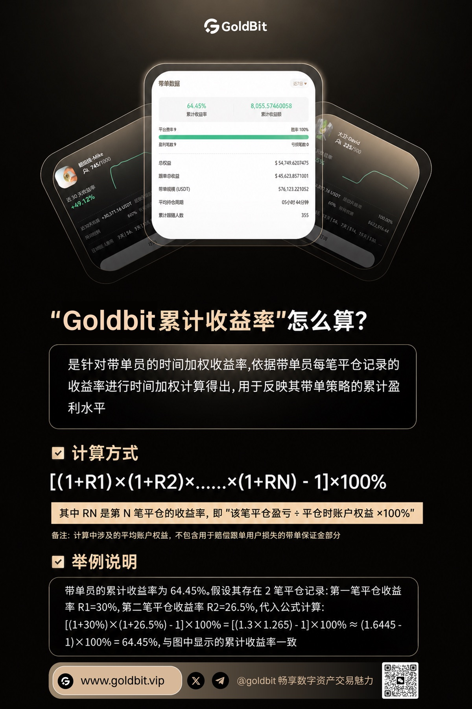
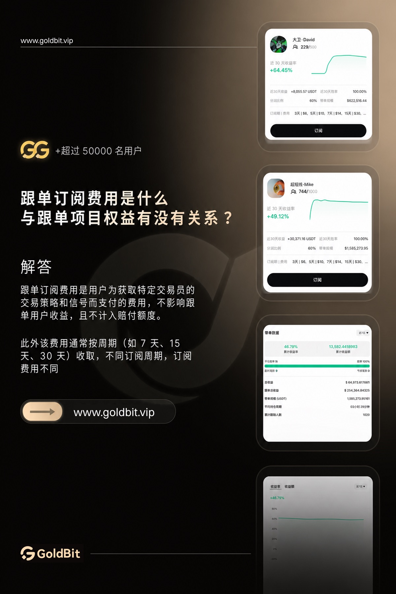

Selected direction
让每一张画面
成为品牌的记忆点。
围绕视觉焦点、信息层级与传播场景建立画面节奏，在纵向海报、方形内容和横版社交媒体素材之间保持统一气质。
- 20
- 视觉作品
- 03
- 内容比例
- 01
- 统一语言
Campaign posters
纵向构图与
视觉叙事
通过错落列阵和留白关系呈现系列作品，保留每张海报完整比例与独立视觉焦点。
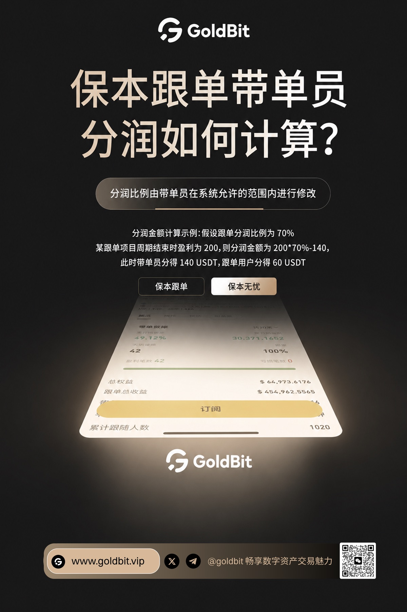
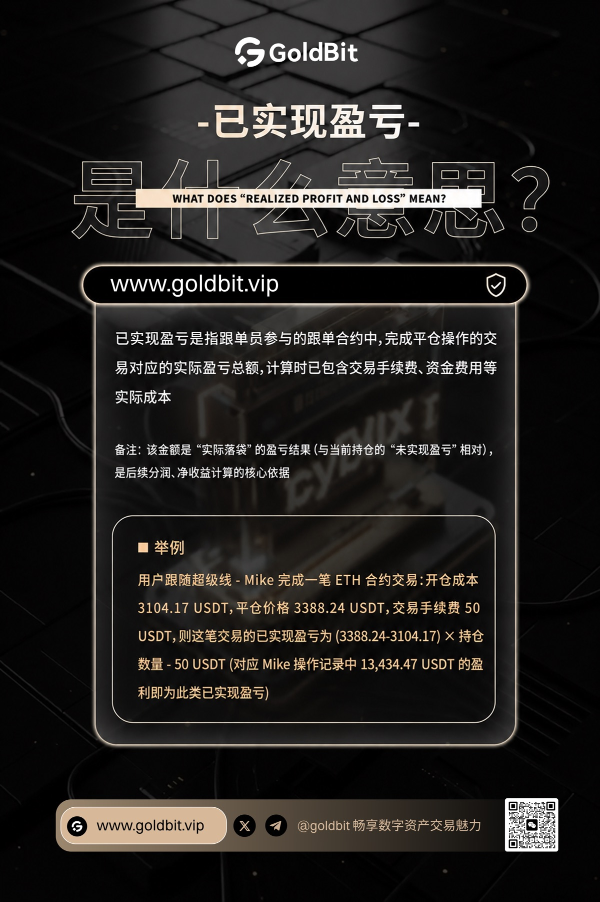
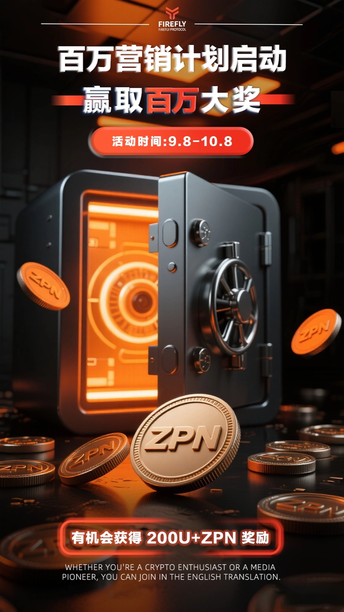
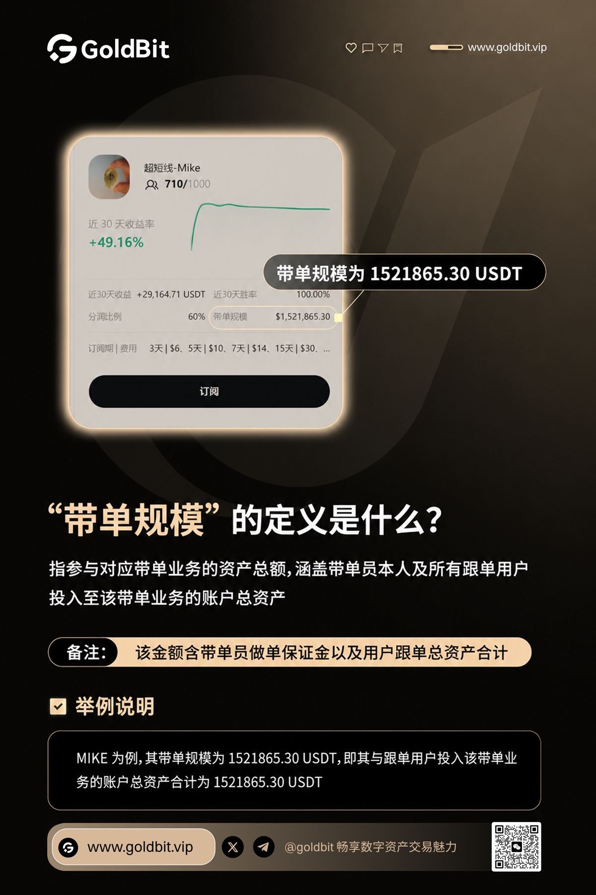
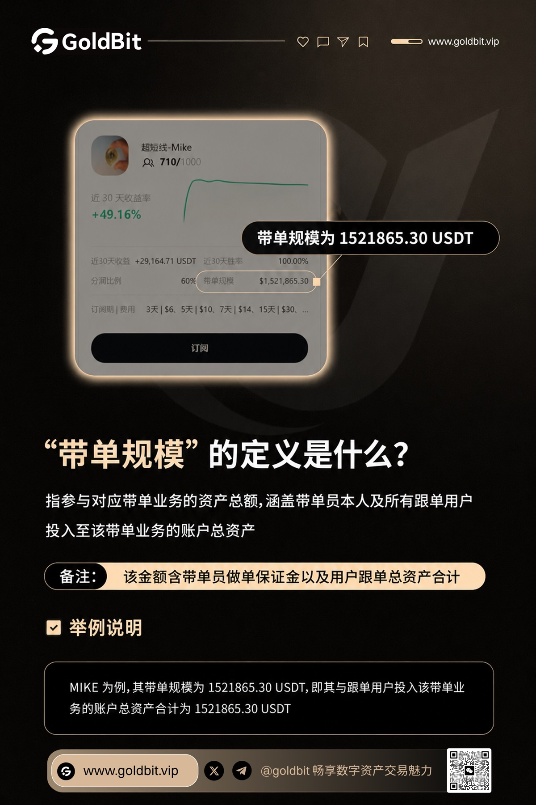
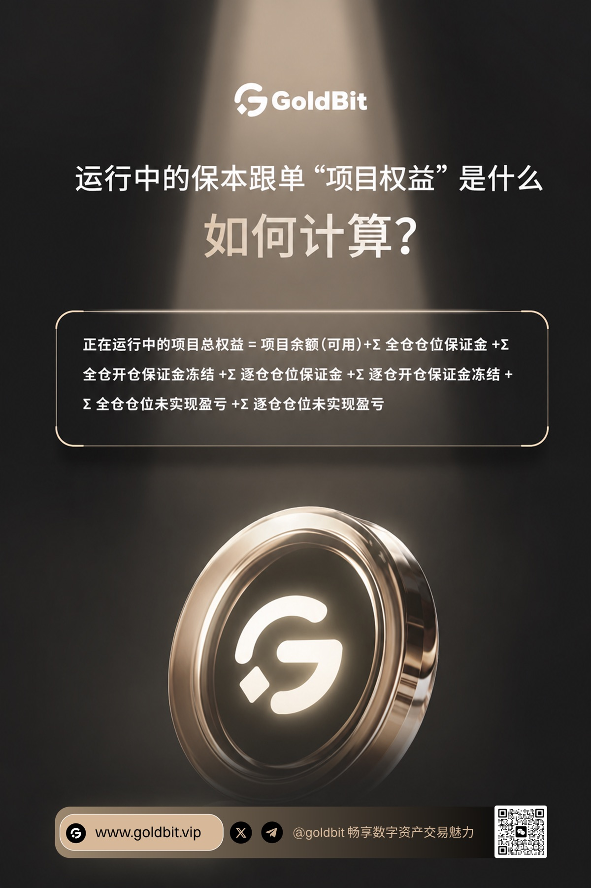
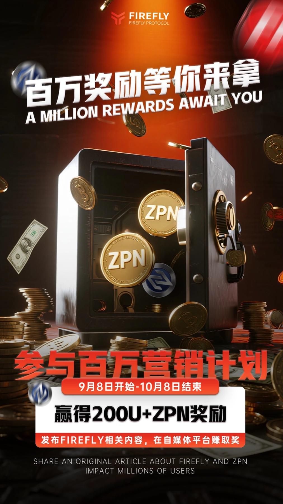
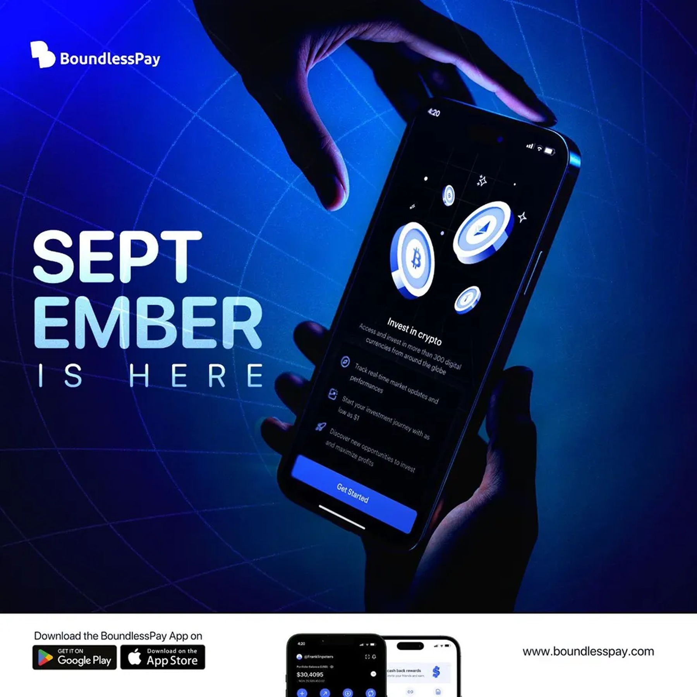
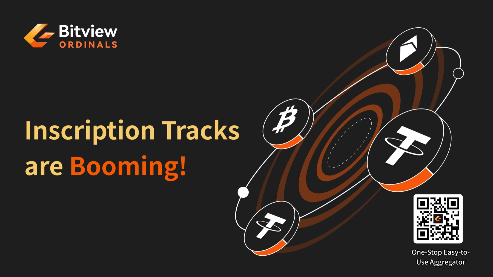
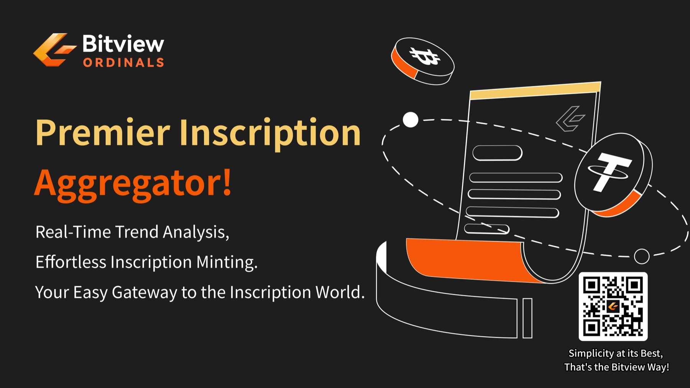
Visual archive / 2026